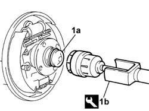
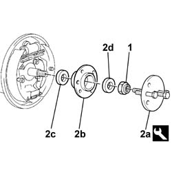
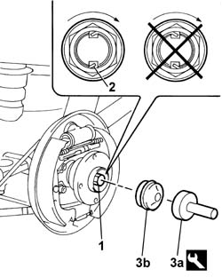

4450D10 hub of one rear wheel, l/h or r/h - r+r with wheel removed
- Path
- Procedures > 44 SUSPENSION AND WHEELS > 4450 WHEELS AND HUBS > 4450D rear wheel hubs > 4450D10 hub of one rear wheel, l/h or r/h - r+r with wheel removed
- Kind
- repair procedure (removal / refitting; the operation number is the code)
- Applies to
- all engines; all production periods
- Interactive page
- https://sloeber94.github.io/elrnDB-fDbl/en/#/2584786
Applies to: all engines; all production periods
 Removing
Removing
 Refitting
RefittingOp. 3320B30 LH OR RH REAR BRAKE DRUM (ONE) - R.R.
1. Remove the wheel hub cover (1a) using the tool (1b).
 | Name | Country |
|---|---|---|
1b | Extractor | 1.847.014.000 |

Applies to: all engines; all production periods
Remove the staking from the wheel hub fixing nut.
1. Undo the wheel hub fixing nut.
2. Using the tool (2a), remove the wheel hub (2b), complete with bearings and inner (2c) and outer (2d) spacers.
| Name | Country |
|---|---|---|
2a | Extractor | 1.847.015.000 |

Applies to: all engines; all production periods
Refitting
RemovingPosition the inner spacer, the hub complete with bearings and the outer spacer on the stub axle.
Tighten a new wheel hub fixing nut.
1. Tighten the rear wheel hub fixing nut to torque.
 | Fastening | Component | Ø | Value (daNm) |
|---|---|---|---|---|
1 | Nut | REAR WHEEL HUB WITH BEARINGS | M22 x 1.5 | 7 + 55° |
2. Stake the collar of the nut; The collar should be cut on the notch on the hub, on the side opposite that of tightening the nut, so that the safety lug prevents accidental loosening.
3. Fit the hub covers (3b) using the tool (3a).
| Name | Country |
|---|---|---|
3a | Drift | 1.875.059.000 |

Applies to: all engines; all production periods